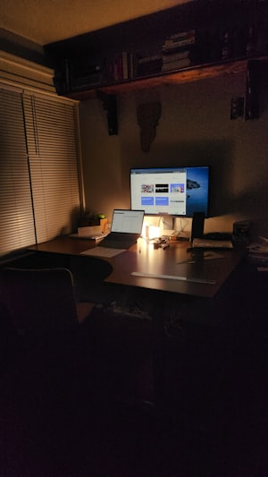
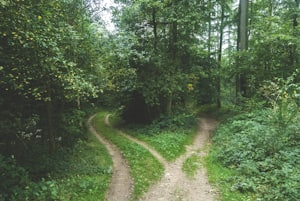

Sign in
Enter a Gmail-format address to create your local profile. This does not create or connect to a real Google account.
This is a local login, not real Google sign-in - nothing is verified or backed up on a server. Your progress is saved only in this browser: switching devices, using a different browser, or clearing site data will permanently lose it.